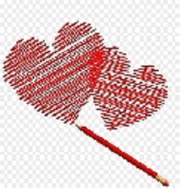

Envia tu diseño
A partir de una imagen, fotografia, dibujo. Nos mostras cual es el amigurumi que queres tener
Novedades
Encontra las ultimas novedades
¿Cómo cuidar tu amigurumi?
Tip´s para limpiar tus amigurumis
Creación demuñecos de lana tejidos por el metodo crochet, con detalles bordados y ojos de seguridad
A partir de una imagen, fotografia, dibujo. Nos mostras cual es el amigurumi que queres tener
Encontra las ultimas novedades
Tip´s para limpiar tus amigurumis